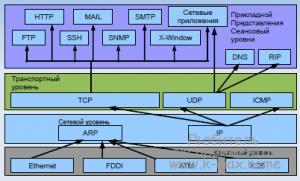

Настройка сети в Linux, диагностика и мониторинг
Доброго времени, уважаемые читатели. Публикую вторую часть статьи о сетевой подсистеме Linux. В текущей части основной упор сделан на реализацию сети в Linux (как настроить сеть в Linux, как продиагностировать сеть в Linux и поддерживать в рабочем состоянии сетевую подсистему в Linux).
Настройка TCP/IP в Linux для работы в сети Ethernet
Для работы с сетевыми протоколами TCP/IP в Linux достаточно наличие только петлевого интерфейса, но если необходимо объединить хосты между собой, естественно, необходимо наличие сетевого интерфейса, каналов передачи данных (например витая пара), возможно, какого-либо сетевого оборудования. Так же, необходимо наличие установленных утилит для настройки сети(/sbin/ifconfig, /sbin/route и др.), обычно поставляемые в пакете net-tools. Так же необходимо наличие конфигурационных файлов для сети (например /etc/hosts) и поддержку сети ядром Linux.
Начнем понимание сетевых механизмов Linux с ручного конфигурирования сети, то есть со случая, когда IP адрес сетевого интерфейса статичен. Итак, при настройке сети, необходимо учесть и настроить следующие параметры:
IP-адрес - как уже говорилось в первой части статьи - это уникальный адрес машины, в формате четырех десятичных чисел, разделенных точками. Обычно, при работе в локальной сети, выбирается из частных диапазонов, например: 192.168.0.1
Маска подсети - так же, 4 десятичных числа, определяющие, какая часть адреса относиться к адресу сети/подсети, а какая к адресу хоста. Маска подсети является числом, которое складывается (в двоичной форме) при помощи логического И, с IP-адресом и в результате чего выясняется, к какой подсети принадлежит адрес. Например адрес 192.168.0.2 с маской 255.255.255.0 принадлежит подсети 192.168.0.
Адрес подсети - определяется маской подсети. При этом, для петлевых интерфейсов не существует подсетей.
Широковещательный адрес - адрес, используемый для отправки широковещательных пакетов, которые получат все хосты подсети. Обычно, он равен адресу подсети со значением хоста 255, то есть для подсети 192.168.0 широковещательным будет 192.168.0.255, аналогично, для подсети 192.168 широковещательным будет 192.168.255.255. Для петлевых интерфейсов не существует широковещательного адреса.
IP адрес шлюза - это адрес машины, являющейся шлюзом по-умолчанию для связи с внешним миром. Шлюзов может быть несколько, если компьютер подключен к нескольким сетям одновременно. Адрес шлюза не используется в изолированных сетях (не подключенных к глобальной сети), потому что данным сетям некуда отправлять пакеты вне сети, то же самое относиться и к петлевым интерфейсам.
IP-адрес сервера имен (DNS - сервера) - адрес сервера преобразующего имена хостов в IP адреса. Обычно, предоставляется провайдером.
Файлы настроек сети в Linux (конфигурационные файлы)
Для понимания работы сети в Linux, я бы обязательно посоветовал ознакомиться со статьей «Этапы загрузки Linux». В целом, вся работа Linux основана на процессе init, который рождается при загрузке ОС и плодит своих потомков, которые в свою очередь и выполняют всю необходимую работу, будь то запуск bash или демона. Да, и вся загрузка Linux основана на скриптах bash, в которых прописана вся последовательность запуска мелких утилит с различными параметрами, которые последовательно запускаются/останавливаются при запуске/остановке системы. Аналогично запускается и сетевая подсистема Linux. Каждый дистрибутив Linux имеет слегка отличающийся от других механизм инициализации сети, но общая картина, думаю, после прочтения будет ясна. Если просмотреть стартовые скрипты сетевой подсистемы какого-либо дистрибутива Linux, то, как настроить конфигурацию сети с помощью конфигурационных файлов, станет более-менее понятно, например у Debian/Ubuntu (за основу возьмем эту ветвь дистрибутивов) за инициализацию сети отвечает скрипт /etc/init.d/networking, просмотрев содержимое которого:
net-server:~#cat /etc/init.d/networking
#!/bin/sh -e
### BEGIN INIT INFO
# Provides: networking
# Required-Start: mountkernfs $local_fs
# Required-Stop: $local_fs
# Should-Start: ifupdown
# Should-Stop: ifupdown
# Default-Start: S
# Default-Stop: 0 6
# Short-Description: Raise network interfaces.
### END INIT INFO
PATH="/usr/local/sbin:/usr/local/bin:/sbin:/bin:/usr/sbin:/usr/bin"
[ -x /sbin/ifup ] || exit 0
. /lib/lsb/init-functions
process_options() {
[ -e /etc/network/options ] || return 0
log_warning_msg "/etc/network/options still exists and it will be IGNORED! Read README.Debian of netbase."
}
check_network_file_systems() {
[ -e /proc/mounts ] || return 0
if [ -e /etc/iscsi/iscsi.initramfs ]; then
log_warning_msg "not deconfiguring network interfaces: iSCSI root is mounted."
exit 0
fi
exec 9<&0 < /proc/mounts
while read DEV MTPT FSTYPE REST; do
case $DEV in
/dev/nbd*|/dev/nd[a-z]*|/dev/etherd/e*)
log_warning_msg "not deconfiguring network interfaces: network devices still mounted."
exit 0
;;
esac
case $FSTYPE in
nfs|nfs4|smbfs|ncp|ncpfs|cifs|coda|ocfs2|gfs|pvfs|pvfs2|fuse.httpfs|fuse.curlftpfs)
log_warning_msg "not deconfiguring network interfaces: network file systems still mounted."
exit 0
;;
esac
done
exec 0<&9 9<&-
}
check_network_swap() {
[ -e /proc/swaps ] || return 0
exec 9<&0 < /proc/swaps
while read DEV MTPT FSTYPE REST; do
case $DEV in
/dev/nbd*|/dev/nd[a-z]*|/dev/etherd/e*)
log_warning_msg "not deconfiguring network interfaces: network swap still mounted."
exit 0
;;
esac
done
exec 0<&9 9<&-
}
case "$1" in
start)
process_options
log_action_begin_msg "Configuring network interfaces"
if ifup -a; then
log_action_end_msg $?
else
log_action_end_msg $?
fi
;;
stop)
check_network_file_systems
check_network_swap
log_action_begin_msg "Deconfiguring network interfaces"
if ifdown -a --exclude=lo; then
log_action_end_msg $?
else
log_action_end_msg $?
fi
;;
force-reload|restart)
process_options
log_warning_msg "Running $0 $1 is deprecated because it may not enable again some interfaces"
log_action_begin_msg "Reconfiguring network interfaces"
ifdown -a --exclude=lo || true
if ifup -a --exclude=lo; then
log_action_end_msg $?
else
log_action_end_msg $?
fi
;;
*)
echo "Usage: /etc/init.d/networking {start|stop}"
exit 1
;;
esac
exit 0
можно найти несколько функций, проверяющих наличие подключенных сетевых файловых систем (check_network_file_systems(), check_network_swap()), а так же проверку существования какого-то пока непонятного конфига /etc/network/options (функция process_options()), а в самом низу, конструкцией case «$1» in проверяется первый параметр переданный скрипту и в соответствии с введенным параметром (start/stop/force-reload|restart или любое дугое) производит определенные действия. Из этих самых «определенных действий», на примере аргумента start видно, что сначала запускается функция process_options, далее отправляется в лог фраза Configuring network interfaces, и запускается команда ifup -a. Если посмотреть man ifup, то видно что данная команда читает конфиг из файла /etc/network/interfaces и согласно ключу -a запускает все интерфейсы имеющие параметр auto.
The ifup and ifdown commands may be used to configure (or, respectively, deconfigure) network interfaces based on interface definitions in the file /etc/network/interfaces.
-a, --all
If given to ifup, affect all interfaces marked auto. Interfaces are brought up in the order in which they are defined in /etc/network/interfaces. If given to ifdown, affect all defined interfaces. Interfaces are brought down in the order in which they are currently listed in the state file. Only interfaces defined in /etc/network/interfaces will be brought down.
Соответственно, прочитав man interfaces (rus) или man interfaces (eng), становиться ясно, как же в Debian/Ubuntu настроить какой-либо сетевой интерфейс с помощью конфига /etc/network/interfaces. Ниже, пример данного конфигурационного файла для 3х интерфейсов: петлевой (lo), со статичным IP (eth2) и IP получаемым по dhcp (eth0):
ip-server:~# cat /etc/network/interfaces
# This file describes the network interfaces available on your system
# and how to activate them. For more information, see interfaces(5).
# The loopback network interface
auto lo
iface lo inet loopback
# The primary network interface
allow-hotplug eth0
iface eth0 inet dhcp
allow-hotplug eth2
iface eth2 inet static
address 192.168.1.1
netmask 255.255.255.0
gateway 192.168.1.254
broadcast 192.168.1.255
В данном конфиге строки allow-hotplug и auto - это синонимы и интерфейсы будут подняты по команде ifup -a. Вот, собственно, и вся цепь работы сетевой подсистемы. Аналогично, в других дистрибутивах: в RedHat и SUSE сеть запускается скриптом /etc/init.d/network. Рассматрев его, аналогично можно найти, где лежит конфигурация сети.
/etc/hosts
Данный файл хранит перечень IP адресов и соответствующих им (адресам) имен хостов.Формат файла ничем не отличается от мастдайного:
ip-server:~# cat /etc/hosts
# ip host.in.domain host
127.0.0.1 localhost
127.0.1.1 ip-server.domain.local ip-server
192.168.1.1 ip-server.domain.local ip-server
Исторически, данный файл использовался вместо службы DNS. В настоящее время, файл так же может использоваться вместо службы DNS, но только при условии, что в вашей сети количество машин измеряется в единицах, а не в десятках или сотнях, потому что в таком случае, придется контролировать корректность данного файла на каждой машине.
/etc/networks
Данный файл хранит имена и адреса локальной и других сетей. Пример:
ip-server:~# cat /etc/networks
default 0.0.0.0
loopback 127.0.0.0
link-local 169.254.0.0
home-network 192.168.1.0
При использовании данного файла, сетями можно управлять по имени. Например добавить маршрут не route add 192.168.1.12, а route add home-network.
/etc/nsswitch.conf
Файл определяет порядок поиска имени хоста/сети, за данную настройку отвечают строки:
Для хостов:
hosts: files dns
Для сетей:
networks: files
Параметр files указывает использовать указанные файлы (/etc/hosts и /etc/networks соответственно), параметр dns указывает использовать службу dns.
/etc/resolv.conf
Этот файл определяет параметры механизма преобразования сетевых имен в IP адреса. Пример:
ip-server:~# cat /etc/resolv.conf
nameserver 10.0.0.4
nameserver 10.0.0.1
search domain.local
Первые 2 строчки указывают сервера DNS. Третья строка указывает домены поиска. Если при разрешении имени, имя не будет FQDN-именем, то данный домен подставиться в виде «окончания». Например при выполнении команды ping host, прингуемый адрес преобразуется в host.domain.local. Остальные параметры можно почитать в man resolv.conf.
В современных дистрибутивах Linux используется динамическая генерация данного файла, с помощью утилиты resolvconf. Она является посредником между службами, динамически предоставляющими сервера имен (например DHCP client) и службами, использующими данные сервера имен. Статические адреса DNS серверов, в случае использования resolvconf, задаются внутри /etc/network/interfaces (подробнее об этом - в разделе настройки).
Настройка сети подробно разобрана в отдельной статье.
Существует большое количество инструментов диагностики сети в Linux, зачастую, они очень похожи на утилиты от Microsoft. Я рассмотрю 3 основные утилиты диагностики сети, без которых выявить неполадки будет проблематично.
Думаю, что данная утилита знакома чуть ли не каждому. Работа этой утилиты заключается в отправке т.н. пакетов ICMP удаленному серверу, который будет указан в параметрах команды, сервер возвращает отправленные команды, а ping подсчитывает время требуемое отправленному пакету, чтобы дойти до сервера и вернуться. Например:
[root@proxy ~]# ping ya.ru
PING ya.ru (87.250.251.3) 56(84) bytes of data.
64 bytes from www.yandex.ru (87.250.251.3): icmp_seq=1 ttl=57 time=42.7 ms
64 bytes from www.yandex.ru (87.250.251.3): icmp_seq=2 ttl=57 time=43.2 ms
64 bytes from www.yandex.ru (87.250.251.3): icmp_seq=3 ttl=57 time=42.5 ms
64 bytes from www.yandex.ru (87.250.251.3): icmp_seq=4 ttl=57 time=42.5 ms
64 bytes from www.yandex.ru (87.250.251.3): icmp_seq=5 ttl=57 time=41.9 ms
^C
--- ya.ru ping statistics ---
5 packets transmitted, 5 received, 0% packet loss, time 4012ms
rtt min/avg/max/mdev = 41.922/42.588/43.255/0.500 ms
Как видно, из приведенного примера, ping выводит нам кучу полезной информации. Прежде всего, мы выяснили, что можем установить соединение с хостом ya.ru (иногда говорят, что «хост ya.ru нам доступен»). Во-вторых, мы видим, что DNS работает корректно, потому что «пингуемое» имя было корректно преобразовано в IP адрес (PING ya.ru (87.250.251.3)). Далее, в поле icmp_seq= указана нумерация отправляемых пакетов. Каждому отправляемому пакету последовательно присваивается номер и если в данной нумерации будут «провалы», то это нам расскажет о том, что соединение с «пингуемым» неустойчиво, а так же может означать, что сервер, которому шлют пакеты перегружен. По значению time= мы видим, сколько времени пакет путешествовал до 87.250.251.3 и обратно. Остановить работу утилиты ping можно клавишами Ctrl+C.
Так же, утилита ping интересна тем, что может позволить увидеть, где именно возникли неполадки. Допустим, утилита ping выводит сообщение network not reachable (сеть недоступна), либо другое аналогичное сообщение. Это, скорее всего, говорит о некорректной настройке вашей системы. В таком случае, можно послать пакеты по IP-адресу провайдера, чтобы понять, в каком месте возникает проблема (между локальным ПК или «дальше»). Если Вы подключены к интернету через маршрутизатор, то можно послать пакеты по его IP. Соответственно, если проблема проявиться уже на этом этапе, это говорит, о неправильном конфигурировании локальной системы, либо о повреждении кабеля, если маршрутизатор отзывается, а сервер провайдера нет, то проблема - в канале связи провайдера и т.д. Наконец, если неудачей завершилось преобразовании имени в IP, то можно проверить связь по IP, если ответы будут приходить корректно, то можно догадаться, что проблема в DNS.
Следует отметить, что данная утилита не всегда надежный инструмент для диагностики. Удаленный сервер может блокировать ответы на ICMP запросы.
Простым языком, команда называется трассировка маршрута. Как можно понять из названия - данная утилита покажет по какому маршруту шли пакеты до хоста. Утилита tracerouteнесколько похожа на ping, но отображает больше интересной информации. Пример:
[root@proxy ~]# traceroute ya.ru
traceroute to ya.ru (213.180.204.3), 30 hops max, 60 byte packets
1 243-083-free.kubtelecom.ru (213.132.83.243) 6.408 ms 6.306 ms 6.193 ms
2 065-064-free.kubtelecom.ru (213.132.64.65) 2.761 ms 5.787 ms 5.777 ms
3 lgw.kubtelecom.ru (213.132.75.54) 5.713 ms 5.701 ms 5.636 ms
4 KubTelecom-lgw.Krasnodar.gldn.net (194.186.6.177) 81.430 ms 81.581 ms 81.687 ms
5 cat26.Moscow.gldn.net (194.186.10.118) 47.789 ms 47.888 ms 48.011 ms
6 213.33.201.230 (213.33.201.230) 43.322 ms 41.783 ms 41.106 ms
7 carmine-red-vlan602.yandex.net (87.250.242.206) 41.199 ms 42.578 ms 42.610 ms
8 www.yandex.ru (213.180.204.3) 43.185 ms 42.126 ms 42.679 ms
Как видно, можно проследить маршрут от маршрутизатора провайдера 243-083-free.kubtelecom.ru (213.132.83.243) (Юг россии) до конечного хоста в www.yandex.ru (213.180.204.3) в москве.
Данная утилита посылает запросы серверам DNS и возвращает информацию о заданном домене. Пример:
[root@proxy ~]# dig @ns.kuban.ru roboti.ru
; <<>> DiG 9.3.6-P1 <<>> @ns.kuban.ru roboti.ru
; (1 server found)
;; global options: printcmd
;; Got answer:
;; ->>HEADER<<- opcode: QUERY, status: NOERROR, id: 64412
;; flags: qr rd ra; QUERY: 1, ANSWER: 1, AUTHORITY: 2, ADDITIONAL: 0
;; QUESTION SECTION:
;roboti.ru. IN A
;; ANSWER SECTION:
roboti.ru. 448 IN A 72.52.4.90
;; AUTHORITY SECTION:
roboti.ru. 345448 IN NS ns1.sedoparking.com.
roboti.ru. 345448 IN NS ns2.sedoparking.com.
;; Query time: 102 msec
;; SERVER: 62.183.1.244#53(62.183.1.244)
;; WHEN: Thu Feb 17 19:44:59 2011
;; MSG SIZE rcvd: 94
Команда dig послала запрос серверу DNS - ns.kuban.ru (@ns.kuban.ru - данный параметр указывать не обязательно, в таком случае источником информации о DNS будет взят сервер из настройки вашей системы) о доменном имени roboti.ru. В результате чего, получила ответ, в котором мы можем увидеть в разделе ANSWER SECTION информацию об IP адресах домена, в разделе AUTHORITY SECTION информацию о т.н. авторитетных DNS серверах. Третья строка снизу говорит нам о том, какой сервер предоставил ответ.
ping, dig и другие утилиты диагностики с параметрами, можно найти в посте Основные команды Linux: сеть.
Подключение новой сетевой карты
Подключение и запуск новой сетевой карты сводится к выполнению нескольких шагов:
server:~# dmesg | grep eth
[ 4.720550] e1000: eth0: e1000_probe: Intel(R) PRO/1000 Network Connection
[ 5.130191] e1000: eth1: e1000_probe: Intel(R) PRO/1000 Network Connection
[ 15.285527] e1000: eth2: e1000_watchdog: NIC Link is Up 1000 Mbps Full Duplex, Flow Control: RX
[ 15.681056] e1000: eth0: e1000_watchdog: NIC Link is Up 1000 Mbps Full Duplex, Flow Control: RX
в выводе видно, что в системе есть 2 сетевые карты eth1 и eth2. Подключаем третью и смотрим вывод:
server:~# dmesg | grep eth
[ 4.720513] e1000: eth0: e1000_probe: Intel(R) PRO/1000 Network Connection
[ 5.132029] e1000: eth1: e1000_probe: Intel(R) PRO/1000 Network Connection
[ 5.534684] e1000: eth2: e1000_probe: Intel(R) PRO/1000 Network Connection
[ 39.274875] udev: renamed network interface eth2 to eth3
[ 39.287661] udev: renamed network interface eth1_rename_ren to eth2
[ 45.670744] e1000: eth2: e1000_watchdog: NIC Link is Up 1000 Mbps Full Duplex, Flow Control: RX
[ 46.237232] e1000: eth0: e1000_watchdog: NIC Link is Up 1000 Mbps Full Duplex, Flow Control: RX
[ 96.977468] e1000: eth3: e1000_watchdog: NIC Link is Up 1000 Mbps Full Duplex, Flow Control: RX
В dmesg мы видим, что появилась новая сетевушка - eth3, которая на самом деле - eth2, но переименована менеджером устройств udev в eth3, а eth2 - это на самом деле переименованная eth1 (об udev мы поговорим в отдельном посте). Появление нашей новой сетевой в dmesg нам говорит, что сетевая карта поддерживается ядром и корректно определилась. Осталось дело за малым - настроить новый интерфейс в /etc/network/interfaces (Debian), потому что данная карта не была инициализирована стартовым скриптом /etc/init.d/network. ifconfigданную карту видит:
server:~# ifconfig eth3
eth3 Link encap:Ethernet HWaddr 08:00:27:5f:34:ad
inet6 addr: fe80::a00:27ff:fe5f:34ad/64 Scope:Link
UP BROADCAST RUNNING MULTICAST MTU:1500 Metric:1
RX packets:311847 errors:0 dropped:0 overruns:0 frame:0
TX packets:126 errors:0 dropped:0 overruns:0 carrier:0
collisions:0 txqueuelen:1000
RX bytes:104670651 (99.8 MiB) TX bytes:16184 (15.8 KiB)
но опять же - не конфигурирует. Как конфигурировать сетевую карту говорилось выше.
Думаю, на сегодня это все. Когда начал писать данную статью, думал что впишусь в один пост, но он получился громаден. Посему было решено разбить статью на две. Итого, я постарался изложить, не пошаговое хауту по настройке сети, а изложить принцип и объяснить понимание того, как же запускается и работает сеть в Linux. Очень надеюсь, что мне это удалось. Буду рад вашим комментариями и дополнениям. Со временем, буду статью дополнять.
�